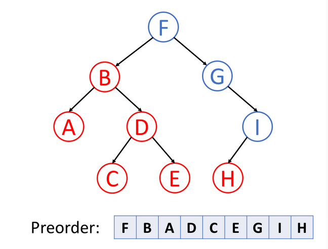
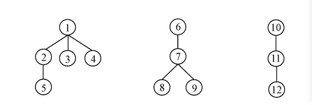
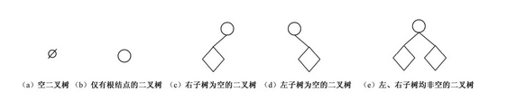
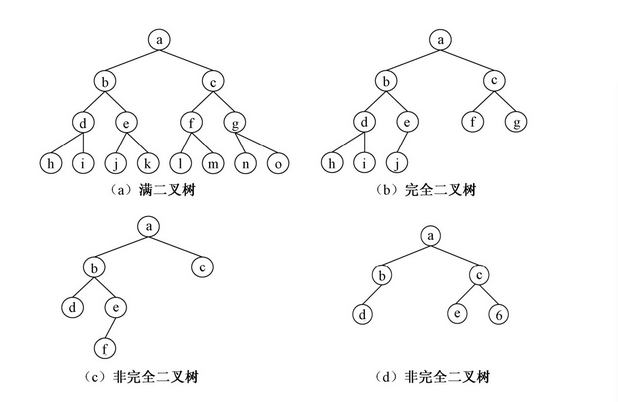

包含树、二叉树、哈希表、二分查找的定义和实现
树
定义
树（Tree）是 n（n≥0）个结点的有限集 T，当 T 为空时称为空树，否则它满足以下两个条件：
- 有且仅有一个特定的数据元素称为根（root）的结点，根结点没有前驱结点
- 其余的结点可分为m（m＞0）个互不相交的子集Tl, T2,…, Tm，其中每个集合Ti（1≤i≤m）本身又是一棵树，并称其为根的子树（subtree）
树的递归定义刻画了树的固有特性：一棵非空树是由若干棵子树构成的，而子树又可由若干棵更小的子树构成。因此，树结构的很多算法都使用了递归方法
基本术语
- 结点的度（degree）：结点拥有的子树数
- 叶子（终端结点）：度为0的结点
- 非终端结点：度不为0的结点
- 结点的层次：树中根结点的层次为1，其子树的根为第2层，其余类推
- 树的度：树中所有结点的最大度数
- 树的深度：树中所有结点层次的最大值
- 有序树、无序树：如果树中每棵子树从左向右的排列拥有一定的顺序，不得互换，则称为有序树；否则称为无序树
- 森林：m（m≥0）棵互不相交的树的集合
在树结构中，结点之间的关系又可用家族关系描述，定义如下：
- 孩子、双亲：结点子树的根称为这个结点的孩子，而这个结点又被称为孩子的双亲（父结点、子结点）
- 子孙：以某结点为根的子树中的所有结点都被称为是该结点的子孙
- 祖先：从根结点到该结点路径上的所有结点
- 兄弟：同一个双亲的孩子之间互为兄弟
- 堂兄弟：双亲在同一层的结点互为堂兄弟
树的遍历
之所以叫前序、中序、后序遍历，是因为根节点在前、中、后
前序：根左右；中序：左根右；后序：左右根；
中序常用来在二叉搜索数中得到递增的有序序列；
后序可用于数学中的后缀表示法，结合栈处理表达式，每遇到一个操作符，就可以从栈中弹出栈顶的两个元素，计算并将结果返回到栈中；
先序遍历
首先访问根节点，然后遍历左子树，最后遍历右子树

中序遍历
先遍历左子树，然后访问根节点，然后遍历右子树。
后序遍历
先遍历左子树，然后遍历右子树，最后访问树的根节点
森林遍历
根据森林和树相互递归的定义，可推出森林的两种遍历方法：
先序遍历森林：
- 访问森林中第一棵树的根结点；
- 先序遍历第一棵树中根结点的子树森林；
- 先序遍历除去第一棵树之后剩余的树构成的森林
后序遍历森林：
- 后序遍历森林中第一棵树的根结点的子树森林；
- 访问第一棵树的根结点；
- 后序遍历除去第一棵树之后剩余的树构成的森林。

上面的森林进行先序遍历和后序遍历，分别得到森林的先序序列为1 23 4 5 6 7 8 9 10 11 12，后序序列为5 2 3 4 1 8 9 7 6 12 11 10
二叉树
定义
一棵二叉树（binary tree）是结点的一个有限集合，该集合或者为空，或者由一个根结点加上两棵分别称为左子树和右子树的、互不相交的二叉树组成。
五种基本形态：

性质
- 在二叉树的第i层上至多有$2^{i-1}$个结点（i≥1）
- 深度为k的二叉树至多有$2^{k-1}$个结点（k≥1）
- 对任意一棵非空二叉树T，若其叶结点数为$n_0$，度为2的结点数为$n_2$，则$n_0=n_2+1$（根节点加上其他度为2的结点树）
- 具有n个结点的完全二叉树的深度为$[log_2n]+1$
证明：设完全二叉树的深度为k，由它的定义和性质可知2k-1-1＜n≤2k-1 或2k-l≤n＜2k，取对数后有k-1≤log2n＜k，因为k是整数，所以k = log2n || +1（或者）
- 如果将一棵有 n个结点的完全二叉树（其深度为log n||2+）自顶向下、同一1层自左向右编号为1, 2, 3,…, n，则对任意一个结点i（1≤i≤n）有：① 如果i = 1，则此结点为二叉树的根，无双亲；如果 i＞1，则其双亲结点是floor(i/2)。② 如果2i＞n，则结点 i无左孩子（结点 i 为叶子结点）；否则其左孩子是结点2i。③ 如果2i+1＞n，则结点 i 无右孩子；否则其右孩子是结点2i+1
满二叉树和完全二叉树
满二叉树（full binarytree）是指深度为k，且有2k-1个结点的二叉树。特点是，每一层上结点数都是最大结点数，即不存在度为1的结点
完全二叉树（completed binary tree）是指深度为k，有n个结点的二叉树，除最后一层外，其余层均是满的，且最下面一层的结点都集中在最左边的位置上

层序遍历
层序遍历就是逐层遍历树结构。
广度优先搜索是一种广泛运用在树或图这类数据结构中，遍历或搜索的算法。
该算法从一个根节点开始，首先访问节点本身。 然后遍历它的相邻节点，其次遍历它的二级邻节点、三级邻节点，以此类推。
当我们在树中进行广度优先搜索时，我们访问的节点的顺序是按照层序遍历顺序的。
二叉树的层序遍历实现
1 | /** |
二叉搜索树
二叉搜索树（BST）是二叉树的一种特殊表示形式，它满足如下特性：
- 每个节点中的值必须大于（或等于）存储在其左侧子树中的任何值
- 每个节点中的值必须小于（或等于）存储在其右子树中的任何值
哈希表
哈希表是一种数据结构，它使用哈希函数组织数据，以支持快速插入和搜索
- 哈希函数：将结点的关键字与它的存储位置之间建立一种对应关系的函数称为哈希函数。
- 哈希表：根据设定的哈希函数h(key)和处理冲突的方法将一组关键字映射到一个有限的连续地址区间上，这样的表称为哈希表，这一映射过程称为哈希造表或散列，所得的存储位置称为哈希地址或散列地址
- 冲突（collision）：不同的关键字映射到同一哈希地址的现象称为冲突
- 同义词（synonym）：在一个哈希函数中，具有相同函数值的关键字，互称为同义词。
有两种不同类型的哈希表：哈希集合和哈希映射。
- 哈希集合是集合数据结构的实现之一，用于存储非重复值。
- 哈希映射是映射 数据结构的实现之一，用于存储(key, value)键值对。
在标准模板库的帮助下，哈希表是易于使用的
原理
哈希表的关键思想是使用哈希函数将键映射到存储桶。更确切地说，
- 当我们插入一个新的键时，哈希函数将决定该键应该分配到哪个桶中，并将该键存储在相应的桶中；
- 当我们想要搜索一个键时，哈希表将使用相同的哈希函数来查找对应的桶，并只在特定的桶中进行搜索。
例如我们使用$y = x ％ 5$作为哈希函数，然后完成插入和搜索策略：
- 插入：我们通过哈希函数解析键，将它们映射到相应的桶中。例如，1987分配给桶2，而24分配给桶4
- 搜索：我们通过相同的哈希函数解析键，并仅在特定存储桶中搜索。如果我们搜索 1987，我们将使用相同的哈希函数将1987 映射到 2。因此我们在桶 2 中搜索，我们在那个桶中成功找到了 1987。例如，如果我们搜索23，将映射23到3，并在桶3中搜索。我们发现23不在桶3中，这意味着23不在哈希表中。
哈希集用法
1 |
|
使用哈希集查重
1 | /* |
哈希映射用法
哈希集合只能存储值。另一方面，哈希映射是映射的一种实现，它能够存储 (key,value) 键值对
由于能够存储更多信息，哈希映射可以帮助我们解决更复杂的问题。 例如，我们可以使用哈希映射按键聚合所有信息，并在平均为常量的时间内查找与特定键相关的信息。
1 |
|
二分查找
它描述了在有序集合中搜索特定值的过程。
二分查找中使用的术语：
- 目标 Target —— 你要查找的值
- 索引 Index —— 你要查找的当前位置
- 左、右指示符 Left，Right —— 我们用来维持查找空间的指标
- 中间指示符 Mid —— 我们用来应用条件来确定我们应该向左查找还是向右查找的索引
三步骤
二分查找一般由三个主要部分组成：
- 预处理 —— 如果集合未排序，则进行排序
- 二分查找 —— 使用循环或递归在每次比较后将查找空间划分为两半
- 后处理 —— 在剩余空间中确定可行的候选者
二分查找代码模板
查找单个索引
二分查找的最基础和最基本的形式
用于查找可以通过访问数组中的单个索引来确定的元素或条件
二分查找的最基础和最基本的形式。
查找条件可以在不与元素的两侧进行比较的情况下确定（或使用它周围的特定元素）。
不需要后处理，因为每一步中，你都在检查是否找到了元素。如果到达末尾，则知道未找到该元素。
1 | int binarySearch(vector<int>& nums, int target){ |
查找索引及其右邻居索引
用于查找需要访问数组中当前索引及其直接右邻居索引的元素或条件
一种实现二分查找的高级方法。
查找条件需要访问元素的直接右邻居。
使用元素的右邻居来确定是否满足条件，并决定是向左还是向右。
保证查找空间在每一步中至少有2个元素。
需要进行后处理。当你剩下1个元素时，循环/递归结束。需要评估剩余元素是否符合条件。
1 | int binarySearch(vector<int>& nums, int target){ |
查找索引及其左右邻居索引
用于搜索需要访问当前索引及其在数组中的直接左右邻居索引的元素或条件。
实现二分查找的另一种方法。
搜索条件需要访问元素的直接左右邻居。
使用元素的邻居来确定它是向右还是向左。
保证查找空间在每个步骤中至少有 3 个元素。
需要进行后处理。当剩下2个元素时，循环/递归结束。需要评估其余元素是否符合条件。
1 | int binarySearch(vector<int>& nums, int target){ |
例子
给定一个n个元素有序的（升序）整型数组nums和一个目标值target，写一个函数搜索nums中的target，如果目标值存在返回下标，否则返回-1
1 | class Solution { |